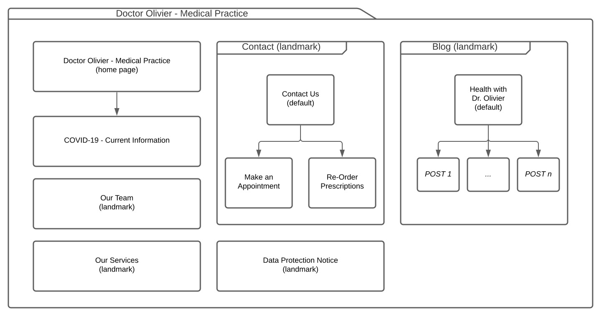

Alexander Mueller
- index, blog, prescriptions, appointment-booking pages (more complex ones)
- header prototype
Carlo Bueckert
- contact, corona, data-protection-notice, services, team pages (simpler ones)
- footer
- refine header
- adaptive design to accomodate scaling and smaller screens
Dr. med. Corey B. Olivier is a young general practitioner situated in Bridlington, England. Within his visiting times and during appointments, he performs examinations on his patients, gives diagnosis, issues referrals and writes new prescriptions or repeats existing ones. In addition, appointments for vaccines can be made at our practice (for a whole list of our services, see the contents of sites/services.md). Dr. Olivier is supported by a small team of staff members which handle most of the logistics regarding questions, appointments and patient data.
In addition to the usual means of contacting your general practician (practice visits or house calls), we also participate in the usage of of AskMyGP, an app that allows patients to easily book appointments, re-order prescriptions and even perform a video call with their general practician. Unfortunately, it has become apparent that some of our patients cannot access this service for certain reasons, which is why we intend to provide alternative ways to book appointments and re-order prescriptions online.
To provide information to our patients more effectively and take care of common tasks (making appointments and re-ordering prescriptions) in a more automatic manner, we are looking to create a website for the convenience of us and our patients. We would like to list not only the opening hours and services of our practice, but also introduce our team and provide information regarding the current state of the pandemic. In addition, Dr. Olivier would like to have a space to write a blog informing patients about general health-best-practices as well as spreading awareness of unterestimated diseases and risks.
The title of the website should be "Doctor Olivier – Medical Practice" and it should be reachable at the domain "doctor-olivier.uk". A general diagram of of the website and its pages can be seen here:

More specific information about each page and its contents is documented in the sites folder.
In general, we would like the website to be modern and mobile-optimized with a clean, professional feel to it. It should convey trust to the Patients, so they feel like they are in good hands when deciding to visit Dr. Olivier for a medical consultation. As part of our branding, we'd like the colors to correspond to the lighter and / or darker colors of the image of doctor olivier. A cooler color temperature is desired, since it feels more hygenic. Furthermore, we'd also like the fonts to reflect this general feeling, though we explicitly wish that they be Sans Serif types.
The layout of the web pages should follow the following general concept: - Header with image of the doctor for branding and important information such as opening hours, location and contact data - Navigation bar at the top with practice logo, which shouldn't move while scrolling - Home - Our Team - Services - Blog - Contact Us - Main Page Content - Footer with links to other pages - Data Protection Notice - Contact (This is down here a second time, because many people may expect it to be here instead of the nav, but it's also too important to not list in the nav) - A Copyright Notice
The homepage is an exception: we would like it to stand out from the other pages with a more individual design. For instance, it can have a bigger header which displays our practice logo more clearly. It should also provide large links that entice first-time viewers to dive deeper into e.g. the services we offer (for more info on what should be shown on the homepage, see index.md).
{kind=link}